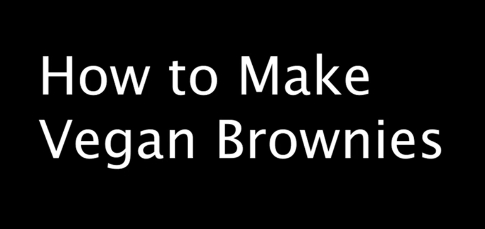
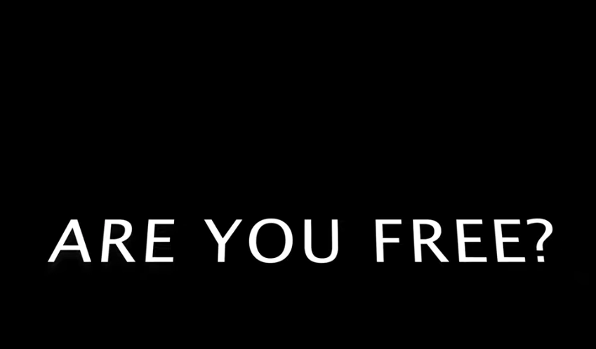

Video
The Vlog!

In this vlog, I conducted an exploratory investigation of the basic but open-ended question of whether vegan brownies would be as satisfying as conventional brownies. Initially, my preconceived idea about the flavor/texture of vegan items vs. conventional left me uncertain regarding my expectations prior to beginning the process. Once I began baking the brownies (with a buddy) and viewed the whole event as a research project, I recorded all the steps and kept a journal of what happened as I prepared my ingredients and completed various tasks along the way. I did not use formally published research to answer my research question; instead, I examined it through an experiential lens, using hands-on experience and a subjective point of view. As we tasted and assessed the brownies we had prepared, my perspective on vegan items changed because I discovered that my preconceptions had been invalidated; thus, I was left with the conclusion that vegan items can provide an enjoyable experience, just as the traditional versions do. This demonstrates that exploration may occur through other means besides formal research and includes the use of experience, reflection, and teamwork. I believe that this Vlog demonstrates how everyday experiences may be transformed into valuable learning opportunities through inquiry and openness to unexpected outcomes.
Essay Film

The essay film I have created looks at the relationship between the ideas of freedom and imprisonment via a set of visual and auditory progressions that take the audience from one emotional state to another. Drawing on theoretical ideas from Gilles Deleuze and Felix Guattari about space and control, I examined how environment can affect a person’s perception of their own autonomy. The film begins with the question “Are you free?” accompanied by natural, panoramic landscapes to show possibility and peace. Later in the film, there are images of imprisonment such as urbanised, densely populated cities; restricted spaces; and social pressures. Each of these examples illustrates how external factors can affect our freedom. The film uses montage and contrasts in order to guide our emotional response to the images; we begin with silence and restraint, and as we progress; we encounter more dynamic sound and images which are uplifting. By moving to images of bright, colourful light and sounds of joy, celebrating connection, and creating community, we see the potential for reclaiming our freedom. Through this project, I demonstrate that the combination of moving images, sound, and editing techniques can be used to convey abstract theoretical concepts through emotional and experiential storytelling.
B-Roll

For this B-roll project, I edited a short video using many pieces of footage taken while on vacation in several locations during Spring Break highlighting the environments and actions that really stood out to me. One of the more striking images was a ruined red JDM vehicle on the side of the road. While its current condition is dilapidated, it represents how something of immense value and importance can be replaced or abandoned due to time and neglect. I also filmed in my hometown’s automotive repair facility. Among the footage taken inside the shop, there was an instance of spontaneity (a squirrel darting through the shop) that brought unexpected life to an otherwise dull place. Conversely, the hardware store footage of a monastery in Texas, including footage of a hermit’s cell or dwelling, gave a feeling of quiet and solitude that provided a different perspective than that which I experience day in and day out. Finally, I filmed footage of a busy Costco Gas Station where I was able to demonstrate the action and routine of the customers and employees that frequented this location. By editing these clips together, I was able to contrast action and stillness, as well as the activity and thought both before and after the act. This project has provided me with a greater understanding of how B-Roll communicates through contrast and composition, motivating me to be more deliberate in the way that I capture, and order my B-Roll in subsequent projects.